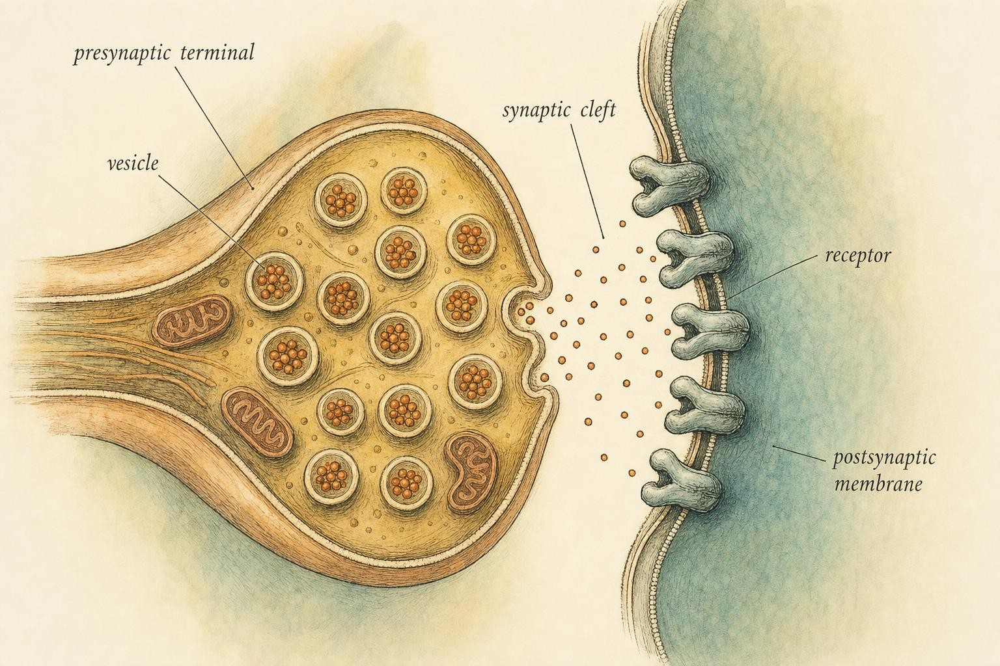
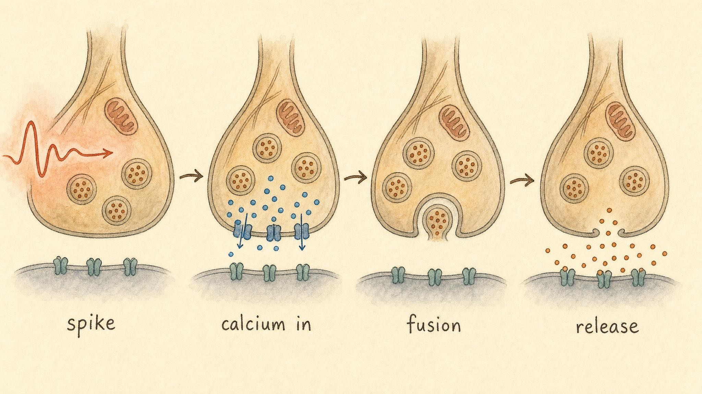

The Chemical Handshake
How an electrical spike becomes a chemical whisper, and then a spike again.
Here is a fact that should bother you more than it usually does: your neurons almost never touch. In Chapter 1 we watched a neuron gather its inputs, reach threshold, and fire a clean electrical spike down its axon. In Chapter 2 we mapped how those neurons wire into circuits. But the wiring diagram hides a secret that no circuit diagram of a computer would ever need to hide. At nearly every connection in that architecture there is a gap, roughly twenty billionths of a meter of salty water, and the electrical spike simply cannot jump it. If neurons were wired the way a lamp is wired to a wall socket, the signal would stop dead at that gap and go nowhere at all.
So the nervous system does something audacious instead. At the edge of the gap it converts the electrical signal into a burst of chemistry, releases a spray of molecules across the void, and rebuilds an electrical signal on the far side. This happens in under a millisecond, hundreds of times a second, at trillions of connections, right now, as your eyes track this very line of text. This chapter is about that conversion, the chemical handshake that turns one cell's decision into another cell's input.
Meet a learner named Amara, who will keep us honest for the rest of this chapter. Amara arrived in this course with years of half remembered biology class facts and a great deal of casual internet reading about brain chemistry, the kind that reduces an entire nervous system to a short list of molecules with tidy, one word jobs: dopamine for pleasure, serotonin for happiness, adrenaline for fear. She could recite the list, but when a friend asked her why a single sip of coffee could sharpen her focus while a single glass of wine could blur it, she realized she did not actually know what a neurotransmitter does at the moment it matters. That gap, and what crosses it, is where this chapter begins, and where Amara's tidy list starts to give way to a sturdier model.
This chapter is, without much exaggeration, the single most important trick in the entire nervous system. Once you understand it, a great deal of pharmacology, psychology, and everyday physiology stops being a list of facts to memorize and starts being a story you can follow, the same story, told from a different angle, every time a drug, a mood, or a movement is explained to you from here forward.
The gap that makes everything possible
The place where two neurons communicate is called the synapse. The neuron sending the signal is presynaptic, the one receiving it is postsynaptic. Between them lies the synaptic cleft, the gap itself. It is tempting to think of this gap as a design flaw, a bit of sloppy engineering evolution never got around to fixing. It is the opposite. The gap is the feature, and once you see why, you will not be able to unsee it anywhere else in biology.
Consider what a purely electrical, hard wired nervous system would be. Every connection would be something like a soldered joint. A signal arriving at that joint would pass through essentially unchanged, the same size, the same sign, every single time, with no room for adjustment. There would be no way to make a connection stronger or weaker with practice, no way to turn a connection off entirely, and no way to let one signal excite a receiving cell while an identical signal, arriving somewhere else, calms it instead. A hard wired brain would be fast, but it would also be frozen, incapable of learning and incapable of selective control. The chemical synapse breaks the direct electrical connection on purpose, and in doing so it inserts a genuine decision point into every link of every circuit in your body. That decision point is where drugs act, where learning is physically stored, and where the difference between calm and panic is negotiated moment by moment.
The core sequence, and this is the spine of the whole chapter, so hold onto it, goes like this. A spike arrives at the presynaptic terminal. The spike opens calcium channels, and calcium floods in. Calcium triggers small, membrane wrapped packets called vesicles to fuse with the cell membrane and dump their cargo of neurotransmitter molecules into the cleft. Those molecules drift across and dock onto receptors on the postsynaptic membrane. The docking opens channels or launches chemical cascades that nudge the receiving cell's voltage up toward its own threshold, or down away from it. And then, critically, the neurotransmitter is cleared away, so the signal can end and the synapse can reset itself for the next one.
Electrical, then chemical, then electrical again. A digital spike becomes an analog chemical cloud, which becomes, on the far side, a graded electrical nudge. Let us walk through each stage slowly, because the details matter and because each one turns out to be a place where the real world, caffeine, antidepressant medication, nerve agents, snake venom, reaches directly into the machinery and changes what it does.

The basic architecture: sender, gap, receiver." data-image-idx="0" style="display:block;max-width:100%;max-height:75vh;height:auto;width:auto;margin:0 auto;cursor:pointer;">Stage one: the spike arrives and calcium answers
The action potential travels down the axon as a self regenerating wave of voltage, the same all or nothing spike you met in Chapter 1. When it reaches the presynaptic terminal, it finds a specialized patch of membrane called the active zone, and clustered there are voltage gated calcium channels. These channels are shut at rest, unbothered by the ordinary background hum of the cell. The arriving spike depolarizes the terminal, the calcium channels sense that voltage change and pop open, and because calcium is held far more concentrated outside the cell than inside, calcium ions, written Ca2+, rush in along that steep concentration gradient the moment the door opens.
This is the first conversion of the chapter, and it is worth pausing on, because everything downstream depends on it. The universal currency of the axon, a change in membrane voltage, has just been translated into a chemical signal inside the terminal: a sudden, sharp spike in local calcium concentration. And it is local in a way that matters enormously. Thomas Südhof, who shared the 2013 Nobel Prize in Physiology or Medicine for working out this exact machinery, emphasized in his Nobel Lecture that the calcium channels sit almost directly on top of the release machinery, so that when calcium enters it does not have to diffuse far to act (Südhof, 2014). The whole point is speed. Fast chemical synaptic transmission happens in well under a millisecond, and it can only be that fast because the trigger, calcium, is delivered essentially at the doorstep of the thing it triggers, rather than having to wander across the cell first.
Why calcium, of all the ions available to a cell? Because calcium is an unusually good signal. Cells work hard to keep internal calcium extremely low at rest, so any sudden influx is a dramatic, unambiguous change, a high signal to noise event. Evolution recruited calcium as a master trigger throughout cell biology, from muscle contraction to fertilization to gene expression, precisely because its silence at baseline makes its arrival meaningful.
It also helps to notice what calcium is not doing. Calcium itself is not the neurotransmitter, and it never leaves the presynaptic terminal to cross the cleft. Its entire job is internal: it is the trigger, not the message. Amara's first instinct was to assume calcium must be one of the chemicals acting on the receiving cell. It is not, and that distinction separates a working model of the synapse from a list of names that all sound vaguely important.
Stage two: vesicles fuse and release
Inside the terminal, neurotransmitter is not floating around loose, waiting for a chance to escape. It is carefully packaged into synaptic vesicles, tiny spheres of membrane, each holding a few thousand molecules of transmitter, sealed and ready. A subset of these vesicles is docked and primed at the active zone, sitting ready like buckets lined up at the lip of a well, cocked and waiting for a single trigger. When calcium floods in, it binds to a sensor protein on the vesicle, and the vesicle fuses with the terminal membrane, spilling its entire contents into the cleft in an instant. This process is called exocytosis.
Südhof's landmark 2004 review, titled simply "The Synaptic Vesicle Cycle," laid out the molecular cast of characters in careful detail (Südhof, 2004). Two players are worth naming even in a working model built for this course, because together they explain the two things you most want explained: the fusion itself, and why that fusion waits for calcium instead of happening on its own. The SNARE proteins, short for soluble NSF attachment protein receptor proteins, are the fusion machinery, long protein strands anchored on the vesicle and on the target membrane that zip together like a coiled zipper, dragging the two membranes into direct contact until they merge. The calcium sensor is a protein called synaptotagmin, which sits on the vesicle and holds the primed fusion machinery in a state of restraint, a loaded spring held in place, until calcium arrives. Rizo and Südhof (2002) describe how, once calcium binds synaptotagmin, that restraint is released and fusion completes almost instantly, on a timescale too fast for most laboratory instruments to resolve without specialized equipment. You do not need to memorize these protein names for this course, but you should carry away the concept underneath them: there is a loaded, cocked mechanism sitting ready inside every terminal, and calcium is the finger that pulls the trigger.
Once emptied, the vesicle membrane does not simply dissolve into the terminal wall. It is recovered and recycled, refilled with fresh transmitter, and made ready to fire again. This recycling, the endocytosis half of what Südhof called the vesicle cycle, is what allows a terminal to keep releasing transmitter during sustained activity without running out of packets. Südhof (2004) framed the presynaptic terminal as a small, self sustaining factory that turns over its own machinery on a timescale of seconds: not a passive nozzle, but a working factory floor.
Notice a consequence of this packaging that will matter later in the chapter. Because transmitter comes bundled in discrete vesicles rather than as a continuous stream, it is released in quanta, discrete gulps, one vesicle's worth at a time, more like coins dropped one by one than a poured stream of liquid. A weak stimulus might trigger only a handful of vesicles; a strong, high calcium event might trigger dozens at once. This is where the graded, analog quality of chemical signaling comes from at the molecular level. The spike that triggered release was fixed in size, but the chemistry it produces downstream is genuinely tunable.

The release sequence, drawn as four moments in under a millisecond." data-image-idx="1" style="display:block;max-width:100%;max-height:75vh;height:auto;width:auto;margin:0 auto;cursor:pointer;">Stage three: molecules cross and dock on receptors
Now the transmitter is loose in the cleft. It does not swim purposefully toward any particular destination, it simply diffuses outward in every direction, and because the cleft is so absurdly thin, diffusion alone carries a molecule to the opposite membrane in a matter of microseconds. There it meets the receptors, proteins embedded in the postsynaptic membrane, each shaped to recognize a particular transmitter and essentially nothing else.
This is the lock and key principle, and it is worth stating carefully, because a subtle version of it is the intellectual centerpiece of this entire chapter. The neurotransmitter is the key. The receptor is the lock. A key that does not fit a lock does nothing at all, glutamate will rattle uselessly against a receptor shaped to recognize gamma-aminobutyric acid (GABA), and neither molecule will so much as nudge a receptor built for dopamine. Fit is everything, and that specificity is what makes the whole system addressable in the first place: a single terminal can release its transmitter into a crowded, busy cleft, and only the cells bearing the matching receptor will respond, while every neighboring structure without that receptor simply ignores the message entirely.
But here is the twist that the naive lock and key story misses, and it is the twist you must internalize to get anything real out of this chapter. A key does not carry its own meaning. The meaning is built into the lock. Turning a physical key might open a door, or it might sound a silent alarm, depending entirely on what the lock is wired to do on the other side of the wall. In exactly the same way, a neurotransmitter does not mean excitation, and it does not mean inhibition. What it does depends entirely on the receptor it happens to bind. We will spend a whole later section, and a whole widget, on this point, because it is the single most common misconception in popular neuroscience writing, the idea that a given molecule is simply the happy chemical or the calming chemical, full stop, regardless of context.
Two families of locks: ionotropic and metabotropic
Receptors come in two broad architectures, and the difference between them is essentially a difference in speed and reach (Purves et al., 2001; Kandel et al., 2021).
An ionotropic receptor is a receptor and an ion channel fused into a single protein. When transmitter binds, the channel opens directly, with no intermediate steps, and ions flow through it immediately. This is fast, a fraction of a millisecond from binding to current, and it is local and brief, lasting only as long as the transmitter stays bound. Ionotropic receptors are the workhorses of fast, point to point signaling, and this is how the excitatory and inhibitory inputs from Chapter 1's threshold simulator actually get delivered in real tissue. Each binding event pries open a tiny channel, a tiny current flows for a fraction of a second, and the postsynaptic voltage twitches up or down by a small, predictable amount.
A metabotropic receptor does not contain a channel at all, and binding does not open anything directly. Instead, when transmitter binds, the receptor activates an internal signaling cascade, typically involving a guanine nucleotide binding protein, usually shortened to a G protein, along with a chain of second messenger molecules inside the cell, that then indirectly opens or closes channels elsewhere in the membrane, changes the cell's metabolism, or even alters which genes the cell expresses over the following hours. This route is slower, tens of milliseconds to seconds to minutes rather than microseconds, but it is far more powerful in its reach: a single binding event can amplify into thousands of downstream molecular actions and can change how the entire cell responds to everything else it encounters afterward. Metabotropic signaling is the molecular basis of neuromodulation, the slow tuning of a cell's overall state rather than the fast delivery of one discrete message.
Keep these two families in mind as we meet the transmitters in the next section. As a rough heuristic, useful but not perfect, the fast accelerator and brake transmitters, glutamate and gamma-aminobutyric acid (GABA), act largely through ionotropic receptors to deliver quick, discrete signals, while the state and motivation transmitters, dopamine, serotonin, and norepinephrine, act largely through metabotropic receptors to tune the system slowly over time. It is only a heuristic, every one of these transmitters uses both kinds of receptors somewhere in the nervous system, but it will keep you oriented as the list of names grows.
Stage four: the receiving cell edges toward or away from threshold
When a receptor opens a channel, ions flow, and the local membrane voltage changes by a small amount. Two outcomes are possible here, and this is where we finally cash out Chapter 1's language of threshold in concrete, mechanistic terms.
If the opened channel lets positive ions in, sodium, most commonly, the local voltage moves up, toward threshold. This is called an excitatory postsynaptic potential (EPSP), a small nudge that makes the receiving cell somewhat more likely to fire its own spike soon. If instead the opened channel lets negative ions in, chloride, typically, or lets positive ions out, potassium, the local voltage moves down, away from threshold. This is an inhibitory postsynaptic potential (IPSP), a nudge that makes firing less likely for a brief window of time.
No single synapse decides anything on its own, and this point cannot be overstated. The postsynaptic neuron is doing exactly what the Chapter 1 simulator did, summing thousands of these small EPSPs and IPSPs across its dendrites and cell body, continuously, arriving from potentially thousands of different presynaptic partners at once. If the running total at the axon's starting segment reaches threshold, the cell fires its own spike, and the whole handshake begins again at the next synapse downstream. The synapse, then, is not a wire in the electrical sense. It is closer to a vote, a graded, weighted, chemically delivered vote, and the neuron is constantly tallying the votes to decide whether or not to speak.
Now watch the full conversion snap into place, start to finish. A discrete electrical spike arrived at a terminal. It became a graded chemical signal, a variable sized puff of transmitter whose size depended on how much calcium got in. That chemical signal became a graded electrical signal again on the far side, an EPSP or an IPSP of variable size, depending on which receptors it met. Only when enough of those graded signals sum together will a new discrete spike be born. Digital in, analog across, digital out. The synapse is the translator that lets a spiking, all or nothing nervous system also behave as a smoothly graded, continuously tunable one. That dual nature is the whole reason a nervous system can be both fast and subtle at once.
Meeting the players, by what they do, not what they are called
Textbooks often introduce neurotransmitters as a pharmacology roll call: names, chemical classes, receptor subtype tables. For a working mental model, that approach is exactly backwards, and it is part of why Amara's tidy list of one word jobs fell apart the moment a friend asked her a real question about coffee and wine. Let us meet the major transmitters by function instead, by the job each one does in the running system, treating the chemistry as supporting detail rather than the headline. Iversen and colleagues (2009) provide the full pharmacological treatment for anyone who wants it later; here we want the story first.
Glutamate, the accelerator
Glutamate is the brain's principal excitatory transmitter. The overwhelming majority of fast excitatory synapses in the central nervous system use it, acting mostly through ionotropic receptors to deliver quick EPSPs across essentially every region of the brain. When you think one neuron pushing another toward firing, think glutamate first. It is the accelerator pedal of the brain, and, foreshadowing Chapter 8, its receptors are also central to how synapses physically strengthen during learning, so the same molecule that carries a routine excitatory signal today is also the molecule that helps carve a stable memory tomorrow. Too much glutamate signaling, left unchecked, is genuinely dangerous, a state called excitotoxicity, in which overstimulated cells can be injured, which is one reason the brake described next is not a luxury but a necessity.
Gamma-aminobutyric acid (GABA), the brake
Gamma-aminobutyric acid (GABA) is the principal inhibitory transmitter of the mature brain. Acting largely through ionotropic receptors that admit chloride, it delivers IPSPs, nudging receiving cells away from threshold rather than toward it. If glutamate is the accelerator, gamma-aminobutyric acid is the brake, and a nervous system is only stable because the two are held in a continuous, dynamic tension across billions of synapses at once. A great many calming and sedating substances, from certain prescription medications to alcohol itself, work in part by enhancing gamma-aminobutyric acid's action at its receptor; when the brake is chemically boosted, the whole system quiets. The glutamate and gamma-aminobutyric acid balance is, in a real sense, the excitation and inhibition balance that the Chapter 1 threshold simulator was silently summing the entire time, just given its two chemical names.
Dopamine, motivation and prediction
Dopamine is not, despite the popular slogan, simply a pleasure molecule. Its best supported computational role is as a reward prediction error signal: dopamine neurons fire not simply when something good happens, but specifically when something is better than expected, and they pause, firing below their normal background rate, when something turns out worse than expected (Glimcher, 2011). This teaching signal tells the rest of the brain how to update its predictions, and it is central to the machinery of learning what to pursue and what to avoid. Dopamine acts through metabotropic receptors, chiefly the D1 and D2 families, and here again the receptor determines the effect: the same dopamine signal drives one population of target cells one direction through D1 receptors and a different population the opposite direction through D2 receptors (Glimcher, 2011). Motivation and learning, not simple pleasure, and a slow modulator of state rather than a fast point to point messenger.
Serotonin, mood and state
Serotonin is a broad modulator of mood, arousal, appetite, and overall behavioral state, rather than a narrow happiness switch. It arises from a small cluster of brainstem nuclei that project widely across nearly the entire brain, and it acts through a large family of mostly metabotropic receptors, more than a dozen distinct subtypes in humans, which is part of why serotonergic medications tend to produce slow, diffuse, state changing effects that build over weeks rather than fast, point to point ones that appear in an instant. When we reach Chapter 9 on sleep, serotonin will reappear as one of the systems that helps shift the entire brain between waking and sleeping states.
Acetylcholine, muscles and the autonomic switchboard
Acetylcholine is the transmitter at the junction between nerve and muscle, meaning every voluntary movement you make is, at its last synaptic step, acetylcholine opening ionotropic receptors on muscle fibers (Kandel et al., 2021). It is also central to the autonomic nervous system, the largely involuntary control of heart rate, gut activity, and glandular output. Hold onto acetylcholine especially, because Chapters 4 and 5 will make it the chemical signature of the parasympathetic, rest and digest branch. Acetylcholine is also the textbook case for the central lesson of the previous section: it uses both ionotropic receptors, called nicotinic receptors, and metabotropic receptors, called muscarinic receptors, and its effect flips entirely depending on which one it meets, a fact the next section walks through directly.
Norepinephrine, alertness and arousal
Norepinephrine, also called noradrenaline, is the transmitter of alertness, vigilance, and arousal. In the central nervous system it sets the gain on attention and wakefulness. In the autonomic system it is the chemical signature of the sympathetic, fight or flight branch, the direct counterpart to acetylcholine's parasympathetic role from Chapters 4 and 5. Norepinephrine and dopamine are chemically close cousins, dopamine is a precursor the body converts into norepinephrine along a short enzymatic pathway, and their systems overlap in genuinely interesting ways. Ranjbar-Slamloo and Fazlali (2020) review this relationship in detail, noting shared receptor families and the fact that norepinephrine transporters can clear dopamine from the cleft in certain brain regions, such as the prefrontal cortex, so the two systems are not as cleanly separable as older, simpler accounts once implied.
The message is in the lock, not just the key
We have arrived at the idea the chapter has been circling since the first stage. State it bluntly: a neurotransmitter has no fixed meaning of its own. Excitation and inhibition are properties of the receptor, not the transmitter. The same molecule can excite one cell and inhibit another, simply because the two cells carry different locks (Purves et al., 2001; Kandel et al., 2021).
Acetylcholine is the cleanest demonstration available, and it is worth walking through slowly, because it pays off directly in the autonomic chapters ahead. Acetylcholine released onto skeletal muscle binds nicotinic, ionotropic receptors, opens channels that admit positive ions, and drives the muscle toward contraction, pure excitation, plain and simple. That same acetylcholine molecule, released instead onto the pacemaker cells of the heart, binds muscarinic, metabotropic receptors, which through a G protein cascade open potassium channels, and the heart cell is inhibited, its firing rate slowed rather than sped up. One molecule. Two receptors. Opposite outcomes: speed a skeletal muscle up, slow a heart down, using the exact same chemical key.
This resolves a puzzle that would otherwise be genuinely baffling. How can a single transmitter, using a single chemical, coordinate the parasympathetic branch across dozens of organs at once, each needing a different response: the heart slowing, the gut churning more actively, the pupil constricting? The coordination cannot live in the messenger itself if the messenger is identical everywhere. It lives in the receptors distributed across each target tissue. The nervous system achieves this specificity not by inventing a new molecule for every message, it has only a small handful of major transmitters in total, but by installing the right lock on the right door in each tissue. The postsynaptic cell, in effect, decides what an incoming signal means.
This is also why so much of pharmacology is, at bottom, receptor pharmacology rather than transmitter pharmacology. A medication that targets one specific receptor subtype can produce excitation like effects in one tissue while leaving every other tissue that lacks that subtype completely untouched, precisely because the drug is choosing among locks rather than among keys. Once you hold the message is in the lock principle firmly in mind, a great deal of otherwise arbitrary seeming drug behavior becomes genuinely predictable, and a great deal of oversimplified brain chemistry writing becomes easy to spot.
Clearance: a signal that never stops is as useless as one that never starts
We have one stage left, and it is the stage beginners forget most often, even though it is arguably as important as release itself. The handshake is not complete when the transmitter binds a receptor, it is complete only when the transmitter is removed. Imagine a doorbell that, once pressed, kept ringing forever. It would tell you nothing after the first instant, because a signal that cannot turn off cannot carry further information. The nervous system faces exactly this constraint: for a synapse to send a second message, it must first fully erase the first one. This is called clearance, and there are two main mechanisms that accomplish it.
Reuptake is the vacuum cleaner. Specialized transporter proteins sitting in the presynaptic membrane physically pump the transmitter back into the terminal it came from, ending its action in the cleft and recovering the molecules for reuse. Torres, Gainetdinov, and Caron (2003) describe these plasma membrane transporters in detail, and this reuptake route is the dominant clearance mechanism for serotonin, dopamine, and norepinephrine. Enzymatic breakdown is the shredder. An enzyme sitting in the cleft chemically chops the transmitter into inactive fragments rather than recycling it whole. Acetylcholine is the classic case: an enzyme called acetylcholinesterase splits it apart almost the instant it unbinds from its receptor, which is why signals at the nerve muscle junction can be so crisp and repeatable, without smearing between one signal and the next (Colovic et al., 2013).
Now here is why clearance belongs at the center of this course rather than sitting as a footnote to release: blocking clearance changes signaling on its own, without adding a single new molecule to the system, and an enormous fraction of the psychoactive substances people encounter in daily life work exactly this way. Block the reuptake transporter, and the transmitter lingers in the cleft, keeps binding and unbinding receptors repeatedly, and its signal is amplified and prolonged even though the terminal released no extra transmitter. This is precisely the mechanism behind the reuptake inhibiting class of antidepressant medications, which prolong serotonin's presence, and behind stimulants such as cocaine, which prolong dopamine's presence by the same logic. Block the breakdown enzyme instead, and the same over stimulated outcome results through the other route: this is how acetylcholinesterase inhibitors work, a category ranging from medications for certain memory disorders, at carefully controlled low doses, to, at the lethal extreme, nerve agents and agricultural insecticides, which flood the neuromuscular junction with acetylcholine until muscles can no longer relax and breathing fails (Colovic et al., 2013).
You saw both mechanisms directly in the Synapse in Motion widget above. Toggle reuptake off, and the transmitter meter refuses to fall. Toggle the breakdown enzyme off instead, and the same stalled outcome appears by the other route. Either way the postsynaptic voltage stays elevated, unable to reset for the next honest signal. That lingering, over stimulated state is the shared logic behind a startling range of drugs, medicines, and toxins a person might encounter across an ordinary lifetime. Understand clearance, and you understand why blocking it is such a common, powerful way to reach into the nervous system from outside.
The line we will not cross: mechanism versus self-directed treatment
Before we return to Amara's story, we need to name the frame that governs this entire course, because it shapes what this chapter, and every chapter around it, is actually for. This is education, not diagnosis and not treatment. We explain mechanisms, and we point toward qualified clinicians when a real symptom in a real person is involved. We do not diagnose, treat, or manage disease, in a learner or in anyone a learner cares about.
That boundary is not legal boilerplate tacked onto the end of an otherwise unrelated chapter. It follows directly from the physiology this chapter has just described. Consider the popular shorthand a chemical imbalance, a phrase Amara had encountered constantly online in connection with mood and anxiety. This chapter should make clear why that phrase, taken as a literal, complete explanation, oversimplifies a system with at least two independently variable layers: how much transmitter a terminal releases, and how the receiving cell's receptors and clearance machinery interpret what arrives. A learner who has absorbed only the phrase chemical imbalance, without the receptor level nuance underneath it, may reasonably but incorrectly conclude that more of a given transmitter is always better, or that a single test could ever reveal a synaptic problem the way a blood test can reveal high cholesterol. Neither is true. Receptor sensitivity, receptor number, and clearance speed all vary from person to person and from moment to moment, and none of them are visible on a simple assay a learner could order for themselves.
So the discipline this course practices is this. When you understand the mechanism, you can explain why a given medication class plausibly affects mood, attention, or movement, and why two people respond differently to the same substance. That is education, and it is genuinely valuable on its own terms. But the moment specific symptoms in a specific person are involved, the correct move is to refer that person to a licensed clinician who can evaluate them directly and interpret results in the context of an actual medical history. Synaptic signaling is individually variable enough that untangling a real person's symptoms requires clinical judgment, the kind that belongs to trained professionals, not to a chapter, a course, or a well informed friend.
Hold onto why this boundary protects a learner rather than limiting them. Understanding how a reuptake inhibitor works at the synapse is not the same as knowing whether a particular person should start, stop, or change one, and confusing those two kinds of knowledge is how well meaning people cause real harm. Knowing the edge of your own understanding is not a weakness in this field. It is the single most professional thing a learner can carry out of this chapter, because it is what keeps the facts from being misapplied.
Case study: Amara and the tidy list that stopped working
The callout earlier in this chapter walked through the actual mechanism: caffeine removes a brake by blocking adenosine's receptor, and alcohol presses gamma-aminobutyric acid's brake harder while easing glutamate's accelerator. That answer satisfied Amara because it was a mechanism question with a mechanism answer, built entirely from receptors this chapter had already named.
A second question she brought to the same conversation did not have that kind of answer, and the difference between the two is the whole point of this case. Amara also asked, half joking, whether her low mood most winters meant her serotonin was simply low, and whether she should try a supplement a website had recommended. Here the boundary from the previous section applies directly. Nothing in this chapter can tell Amara or anyone else whether a specific person's mood reflects a synaptic issue, a sleep issue, a light exposure issue, or something else entirely, because no simple test measures receptor sensitivity or clearance speed in a living brain. The honest answer is not a supplement recommendation. It is that a persistent change in mood deserves an actual conversation with a clinician who can evaluate the whole picture.
It is worth naming what Amara actually walked away with, because it is the real deliverable of this chapter. She did not leave with a better one word label for any transmitter. She left with a working model of the synapse: a spike converts to a chemical signal, calcium is the trigger, transmitter is released in a graded puff, the receptor decides what the signal means, and clearance ends it so the next message can be read cleanly. A question about coffee and wine was answerable inside that model. A question about her own mood was not, and knowing the difference is the sturdier outcome, because it does not depend on trusting whoever posted last.
Putting the handshake back together
Step back and look at the whole thing in one continuous motion. A spike, the digital, all or nothing output from Chapter 1, arrives at a terminal. Voltage opens calcium channels, and calcium is the trigger. The trigger fuses vesicles, releasing a graded puff of transmitter whose size depends on how much calcium got in. The transmitter diffuses across the cleft in microseconds and docks on receptors, where the lock, not the key, decides whether the receiving cell is nudged toward firing or away from it. Those nudges sum, exactly as in the Chapter 1 simulator, and may or may not produce a new spike. And finally clearance, by reuptake or by enzymatic breakdown, erases the message, resetting the synapse for the next handshake and giving drugs, medicines, and toxins their most common point of entry into the system.
This chapter is a genuine hinge in the course. Looking backward, it explains the actual delivery mechanism behind the excitatory and inhibitory inputs you summed in Chapter 1, those were EPSPs and IPSPs all along, chemically delivered and receptor defined. Looking forward, it hands you the two transmitters that will define the autonomic branches in Chapters 4 and 5: acetylcholine for the parasympathetic rest and digest branch, norepinephrine for the sympathetic fight or flight branch. It foreshadows Chapter 8, where the strength of these synapses changes with experience, the physical trace of learning. And it foreshadows Chapter 9, where the modulatory transmitters introduced here shift the entire brain between waking and sleeping states. The chemical handshake is not one topic among many in this course. It is the mechanism through which nearly everything else you will study actually happens.
The speed of neurotransmitter release is astounding: it is initiated in less than a millisecond after Ca²⁺ enters a presynaptic terminal... no other cellular signaling process comes even close.
Thomas Südhof, Nobel Lecture (2014)
Key Takeaways
- Neurons almost never touch. At the synapse, an electrical spike is converted to a chemical signal, ferried across the cleft, and converted back to an electrical signal: digital in, analog across, digital out.
- The trigger for release is calcium: the spike opens voltage-gated calcium channels, and calcium binds a sensor protein, synaptotagmin, that lets primed vesicles fuse and dump transmitter into the cleft.
- Receptors follow a lock-and-key logic, but the meaning lives in the lock, not the key: the same neurotransmitter excites one cell and inhibits another depending entirely on the receptor it binds.
- Ionotropic receptors are fast, local channels; metabotropic receptors are slower G-protein cascades with wide reach, the molecular basis of neuromodulation.
- Think by function, not by slogan: glutamate is the accelerator, gamma-aminobutyric acid (GABA) is the brake, dopamine encodes prediction and motivation, serotonin sets mood and state, acetylcholine drives muscle contraction and parasympathetic signaling, and norepinephrine drives alertness and sympathetic signaling.
- Clearance ends the signal, by reuptake or by enzymatic breakdown. Blocking clearance makes transmitter linger and over-stimulate the receiving cell, which is exactly how many antidepressants, stimulants, and nerve agents work.
- This is education, not diagnosis. Understanding synaptic mechanisms explains how substances and medications work in general; it never replaces an actual clinical evaluation of a real person's symptoms.
We now have the full working neuron: it integrates inputs, reaches threshold, fires, and hands its decision chemically to the next cell. In Chapter 4 we zoom out from the single synapse to a whole control system, the autonomic nervous system, and meet the two branches that govern your heart, gut, and glands without your permission. You already know their chemical signatures: acetylcholine and norepinephrine, the very transmitters you just watched cross the cleft.
References
Colovic, M. B., Krstic, D. Z., Lazarevic-Pasti, T. D., Bondzic, A. M., & Vasic, V. M. (2013). Acetylcholinesterase inhibitors: Pharmacology and toxicology. Current Neuropharmacology, 11(3), 315-335. https://doi.org/10.2174/1570159X11311030006
Glimcher, P. W. (2011). Understanding dopamine and reinforcement learning: The dopamine reward prediction error hypothesis. Proceedings of the National Academy of Sciences, 108(Suppl. 3), 15647-15654. https://doi.org/10.1073/pnas.1014269108
Iversen, L. L., Iversen, S. D., Bloom, F. E., & Roth, R. H. (2009). Introduction to neuropsychopharmacology. Oxford University Press.
Kandel, E. R., Koester, J. D., Mack, S. H., & Siegelbaum, S. A. (2021). Principles of neural science (6th ed.). McGraw Hill.
Purves, D., Augustine, G. J., Fitzpatrick, D., Hall, W. C., LaMantia, A.-S., & White, L. E. (Eds.). (2001). Neurotransmitter receptors and their effects. In Neuroscience (2nd ed.). Sinauer Associates. https://www.ncbi.nlm.nih.gov/books/NBK11099/
Purves, D., Augustine, G. J., Fitzpatrick, D., Hall, W. C., LaMantia, A.-S., & White, L. E. (2018). Neuroscience (6th ed.). Oxford University Press.
Ranjbar-Slamloo, Y., & Fazlali, Z. (2020). Dopamine and noradrenaline in the brain; Overlapping or dissociate functions? Frontiers in Molecular Neuroscience, 12, 334. https://doi.org/10.3389/fnmol.2019.00334
Rizo, J., & Südhof, T. C. (2002). Snares and Munc18 in synaptic vesicle fusion. Nature Reviews Neuroscience, 3(8), 641-653. https://doi.org/10.1038/nrn898
Südhof, T. C. (2004). The synaptic vesicle cycle. Annual Review of Neuroscience, 27, 509-547. https://doi.org/10.1146/annurev.neuro.26.041002.131412
Südhof, T. C. (2014). The molecular machinery of neurotransmitter release (Nobel Lecture). Angewandte Chemie International Edition, 53(47), 12696-12717. https://doi.org/10.1002/anie.201406359
Torres, G. E., Gainetdinov, R. R., & Caron, M. G. (2003). Plasma membrane monoamine transporters: Structure, regulation and function. Nature Reviews Neuroscience, 4(1), 13-25. https://doi.org/10.1038/nrn1008